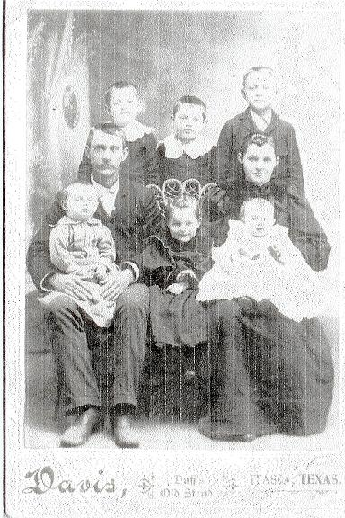
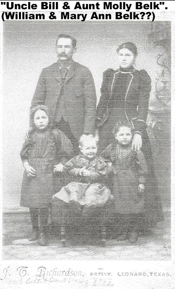

Deed Book X, pg. 271 Power of Attorney given to Thomas
Dowdy by his brothers James Dowdy, Armstead Dowdy Balaam Dowdy
& Benjamin Dowdy of Franklin co. Georgia, to sell their land
they inherited from their father, Thomas Dowdy (II). Witnesses
Samuel Mosby Sr, James Dowdy & Benjamin Dowdy. 24 Nov 1820.
Proven during Chatham Co NC May Session 1821 by oath of Benjamin
Dowdy.
married Elizabeth Cross on 30 May 1816 in Franklin
GA; Elizabeth last appears in the 1860 Clay County Alabama census
age 63 b SC with daughter Mary A. Dowdy, age 33
children:
2(i). Rebecca Dowdy She married John Teal on 3 Apr
1834 in Talbot Co GA
2(ii). Elizabeth Dowdy She married Geo. Hollingsworth
on 21 Dec 1841 in Talbot Co GA
2(iii). Nancy Dowdy; lived next to widowed mother in
Clay Co Alabama in 1860; She married Jas. Hollingsworth on 28
Dec 1841 in Talbot Co GA
2(iv). Sarah Dowdy She married Jas. H. Warrick on 2
January 1845 in Talbot Co GA
2(v). Thomas Dowdy born about 1822; nothing more
known
2(vi). Mary A. Dowdy born about 1828; lived in Clay
Co AL in HH of widowed mother in 1860.
2(vii). Armstead Calaway Dowdy born about 1830; lived
in Clay Co AL next to widowed mother in 1860; killed in battle
in 1863
Dowdy, A. C. - Enlisted May 3, 1862 in Randolph County
by J. M. Handley. Mustered in at Camp Shorter, Loachapoka, Alabama
on May 15, 1862. Killed in battle at Baker's Creek May 16, 1863.
married Sylvia ________
children:
3(i). Elizabeth Dowdy born 1857 in Alabama
3(ii). John Dowdy born 1859 in Alabama
2(viii). Andrew J. Dowdy born about 1833 in GA; lived
in Clay Co AL next to widowed mother in 1860. Captured in battle
in 1863 and again in 1864; died in prison camp 1865. (pdf
of his descendants)
Dowdy, A. J. - Enrolled for service May 3, 1862 by J. M.
Handley in Randolph County. Mustered in at Loachapoka on May
15, 1862. Captured at Baker's Creek May 15, 1863 and sent to
Fort Delaware where he was paroled on July 3, 1863. Captured
near Rough and Ready, Georgia September 6, 1864. Sent to Camp
Douglas, Illinois where he died of pneumonia on February 18,
1865. Buried in Block B, Chicago City Cemetery, and plot #785.
married Mary Ann Hatley
children:
3(i). James Thomas Wiley Dowdy born October, 1857 married
Arvie Zenia Telemisus Donham (some say he was born in Gravely
Springs in Lauderdale Co AL, but the Dowdy family of that area
is at best a very very distant relation, if related at all)

Tom and Arvie Dowdy
(thanks to Glen Eugene Dowdy of Amarillo, Tx, gr son of
James T. W. Dowdy for these photos)
3(ii). William Riley Dowdy born 6 Jan 1859 in Randolph
County Alabama, married DeLula Marsis Donham, younger sister
of Arvie Zenia Donham.

W.R. Dowdy and wife Delula and family
(thanks to Glen Eugene Dowdy of Amarillo, Tx, gr son of
James T. W. Dowdy for these photos)
3(iii). Joseph M. Dowdy born 22 Aug 1860 in Alabama
(no family information or photo available).
3(iv). Mary Matilda Dowdy born 26 Jul 1862 married William
Alexander Belk.

(thanks to Glen Eugene Dowdy of Amarillo, Tx, gr son of James
T. W. Dowdy for these photos)

 Armstead
L. Dowdy
Armstead
L. Dowdy